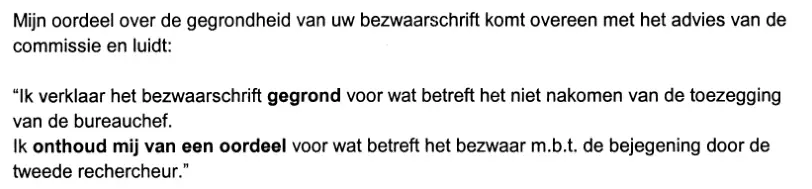
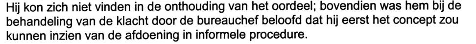

Prueba · Carta
W.J. Deetman, gestor del cuerpo de policía de Haaglanden, a Giltay, 14 de diciembre de 2000
El primer pasaje es la decisión que recoge la carta. El segundo procede del dictamen de la comisión de quejas que se adjunta a la carta, y explica en qué consistía el compromiso y por qué no se cumplió.
La decisión
«Mi decisión acerca de si su escrito de recurso es fundado coincide con el dictamen de la comisión y dice así: “Declaro fundado el escrito de recurso en lo que respecta al incumplimiento del compromiso del jefe de comisaría. Me abstengo de pronunciarme en lo que respecta al recurso relativo al trato dispensado por el segundo investigador”». Página 1, la decisión, en los dos párrafos que siguen a la mención de la Comisión Independiente de Quejas contra la Policía. Las líneas de la imagen escaneada se han unido aquí. La carta misma pone la cita interna entre comillas dobles e imprime en negrita «gegrond» (fundado) y «onthoud mij van een oordeel» (me abstengo de pronunciarme); ese énfasis no se reproduce aquí. Traducido del neerlandés; el texto original figura a continuación.
“Mijn oordeel over de gegrondheid van uw bezwaarschrift komt overeen met het advies van de commissie en luidt: ‘Ik verklaar het bezwaarschrift gegrond voor wat betreft het niet nakomen van de toezegging van de bureauchef. Ik onthoud mij van een oordeel voor wat betreft het bezwaar m.b.t. de bejegening door de tweede rechercheur.’” Texto original

El compromiso
«[…] además, durante la tramitación de la queja, el jefe de comisaría le había prometido que podría ver primero el borrador de la resolución de la queja por el procedimiento informal. […] Sin embargo, la comisión constata que el jefe de comisaría ha alegado que renunció a enviar el borrador de la carta porque la persona de confianza del reclamante no estaría disponible por el momento, y que con ello peligraba la pronta resolución de la queja. La comisión observa que el jefe de comisaría no planteó esta consideración al reclamante —con quien, al fin y al cabo, había llegado a un acuerdo—. La comisión considera que con ello se apartó unilateralmente del acuerdo y que lo incumplió indebidamente». Páginas 4 y 6 del PDF, del dictamen de la comisión de quejas del 13 de diciembre de 2000 que se adjunta a la carta (páginas 3 y 5 del propio dictamen). La primera frase figura bajo «Klacht in eerste aanleg» (queja en primera instancia) y recoge la posición del reclamante; las tres siguientes son las consideraciones de la comisión bajo «Voor wat betreft het niet nakomen van de toezegging m.b.t. de conceptbrief» (en lo que respecta al incumplimiento del compromiso relativo al borrador de la carta). Los puntos suspensivos […] sustituyen el comienzo de la primera frase y el texto intermedio del dictamen. «Klager» (el reclamante) es Giltay. Las líneas de la imagen escaneada se han unido aquí. Traducido del neerlandés; el texto original figura a continuación.
“[…] bovendien was hem bij de behandeling van de klacht door de bureauchef beloofd dat hij eerst het concept zou kunnen inzien van de afdoening in informele procedure. […] De commissie stelt echter vast dat de bureauchef heeft aangevoerd dat hij heeft afgezien van het toezenden van de concept-brief omdat de vertrouwenspersoon van klager voorlopig niet beschikbaar zou zijn en dat daarmee spoedige afdoening van de klacht in gevaar kwam. De commissie constateert dat de bureauchef deze overweging niet aan klager – met wie hij immers een afspraak had gemaakt – heeft voorgelegd. De commissie is van mening dat hij daarmee eenzijdig van de afspraak is afgeweken en deze ten onrechte niet is nagekomen.” Texto original

Por qué importa este documento
En julio de 1999, la policía se negó a registrar la denuncia por difamación y calumnia que Giltay quería presentar contra Barbara Overduyn. Más tarde, Giltay interpuso un recurso administrativo (bezwaar) contra la forma en que se había tramitado su queja sobre la actuación policial. Después de que la reina Beatriz remitiera la carta de Giltay del 14 de octubre de 2000 al ministro del Interior, llegó la respuesta del alcalde de La Haya, Wim Deetman, al escrito de recurso de Giltay del 22 de julio de 2000.
Deetman firma aquí como gestor del cuerpo de policía (korpsbeheerder) de Haaglanden. Declara fundado el recurso en lo que respecta a un compromiso que el jefe de comisaría no cumplió, y se abstiene de pronunciarse sobre el trato dispensado por el segundo investigador. Comunica también que ha pedido que su decisión se ponga en conocimiento de los agentes implicados, para que se extraigan enseñanzas de ella.
Procedencia
- Documento
- Carta, una página, en papel con membrete de la Policía de Haaglanden, de la oficina del gestor del cuerpo de policía, con el dictamen adjunto de la Comisión Independiente de Quejas contra la Policía de la región de Haaglanden, fechado el 13 de diciembre de 2000, seis páginas
- Remitente
- El gestor del cuerpo de policía de la región policial de Haaglanden, Oficina de Integridad y Seguridad, La Haya; firmado por drs. W.J. Deetman
- Destinatario
- E.F. Giltay, La Haya
- Fecha
- 14 de diciembre de 2000
- Asunto
- «bezwaar tegen klachtafdoening» (recurso contra la tramitación de una queja)
- Referencias
- «Uw kenmerk» (su referencia): 22-7-2000, la carta del 22 de julio de 2000
- Anexos
- «div.» (varios)
- Tachado
- La firma del gestor del cuerpo de policía al pie de la carta y las del presidente y el secretario al pie del dictamen están tachadas en la imagen escaneada
- Idioma
- Neerlandés
- Conservado por
- Edwin Giltay, el destinatario
- Véase también
- Jefe de distrito de la policía a Giltay, 26 de marzo de 2000Gabinete de la Reina a Giltay, 31 de octubre de 2000
Citado en: el ensayo «La prohibición cayó, el libro quedó en pie» en el capítulo (3) «Lo que revela el libro: el encubrimiento en torno a Srebrenica» y en la diapositiva «Gabinete de la Reina · 2000» de la presentación «La historia en el mapa».
Ficha de prueba: https://
Documento: https://
Modificado por última vez el 12 de octubre de 2026, consultado el 27 de noviembre de 2026.

Esta página es una ficha de prueba del libro El general del encubrimiento de Edwin Giltay y del sitio web que lo acompaña.